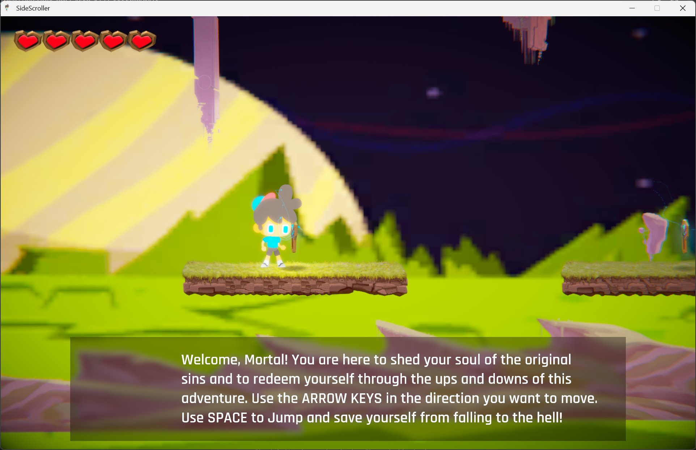
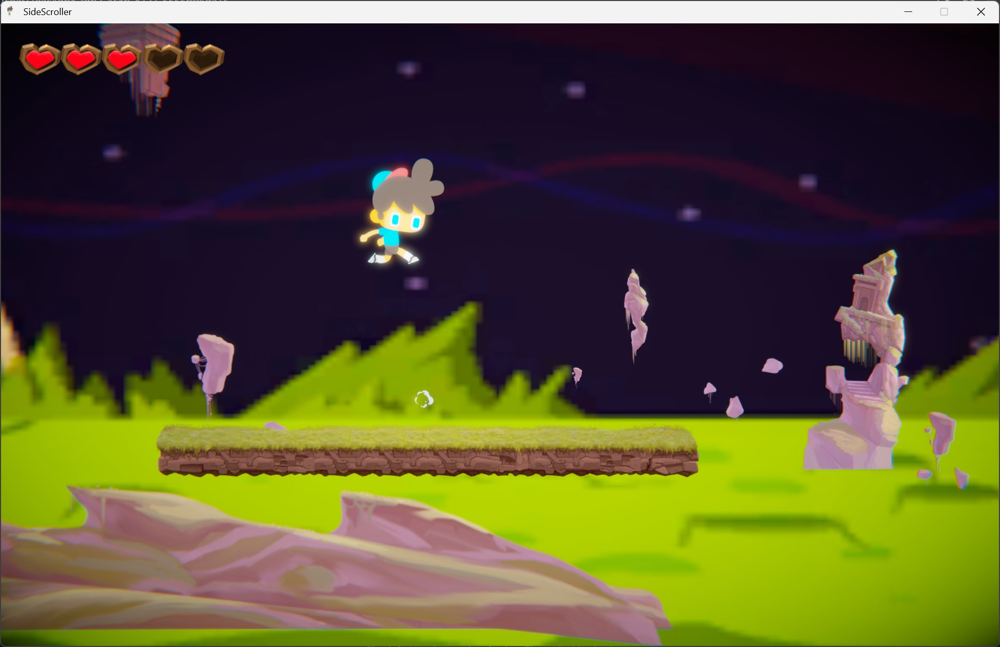
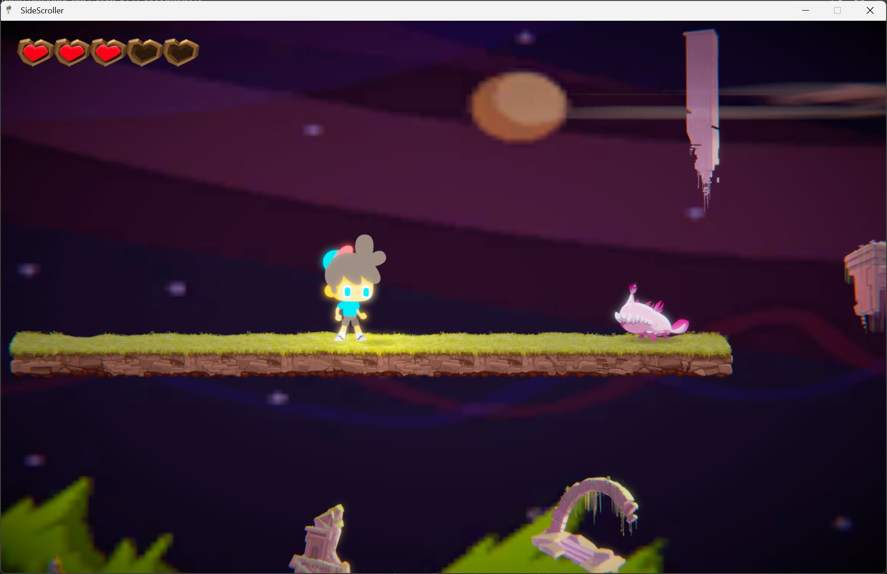

A solo-authored narrative platformer built in Unity during my MA. Three visual moods (golden dawn, twilight, night) trace a redemption arc. Built on Unity's 2D Game Kit foundation. Today I'd write the underlying systems myself, but the level design, narrative framing, and visual direction are still mine.
A solo narrative platformer where the player guides a small character through a journey framed as redemption. The premise is framed in the opening dialogue: "Welcome, Mortal. You are here to shed your soul of the original sins and to redeem yourself through the ups and downs of this adventure." The game uses three distinct visual moods that progress with the story, golden dawn, daylight twilight, and night, each with its own enemies, environmental motifs, and emotional tone.



I want to be specific about this:
The protagonist of SideScroller, a small figure in a blue cap with floppy grey hair, also appears in my MA point-and-click adventure (Final Project), where he is named Jimmy. Same character, two completely different game styles (3D-rendered platformer; hand-illustrated point-and-click), same universe.